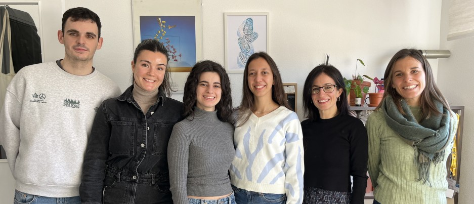
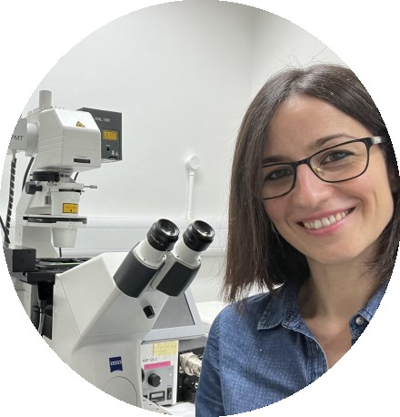

Energy, calcium & cell fate
Investigating how mitochondrial function and calcium signalling influence neuronal health and tau-related disease.
Understanding the role of mitochondria and microglia in the development of neurodegenerative diseases.

Investigating how mitochondrial function and calcium signalling influence neuronal health and tau-related disease.
Exploring how LRRK2, lipid metabolism and inflammatory responses shape microglial function in Parkinson’s disease.
Studying Nrf2 and cannabinoid signalling to understand cellular resilience and identify therapeutic opportunities.
We are Elisa Navarro and Noemí Esteras, two emerging principal investigators joining forces to understand the molecular basis of neurodegenerative diseases. Our laboratory is based at the School of Medicine, Universidad Complutense de Madrid.
From microglia to neurons, transcriptomics to live imaging, and mitochondria to lipid metabolism, we bring complementary approaches to Alzheimer’s disease, Parkinson’s disease and frontotemporal dementia.
We are committed to a supportive environment for learning, collaboration, independence and growth.
